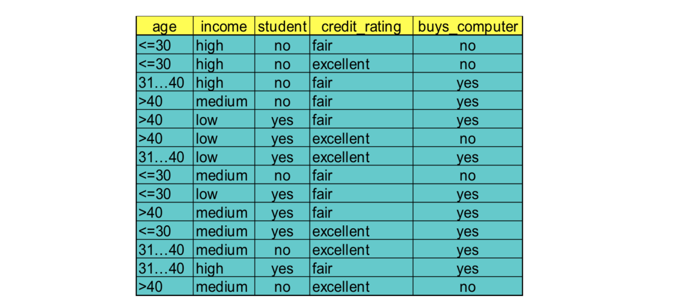
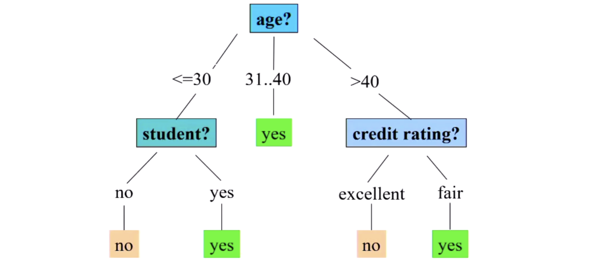
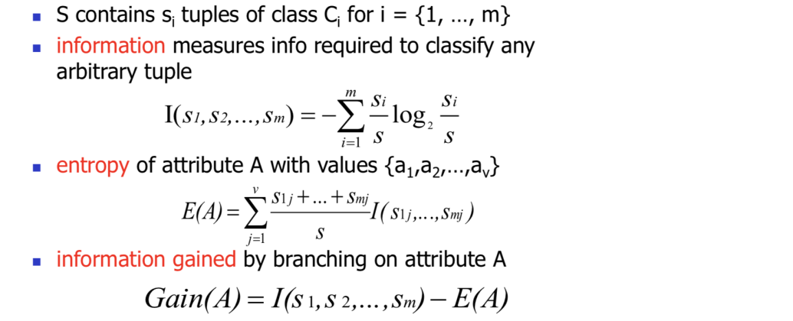
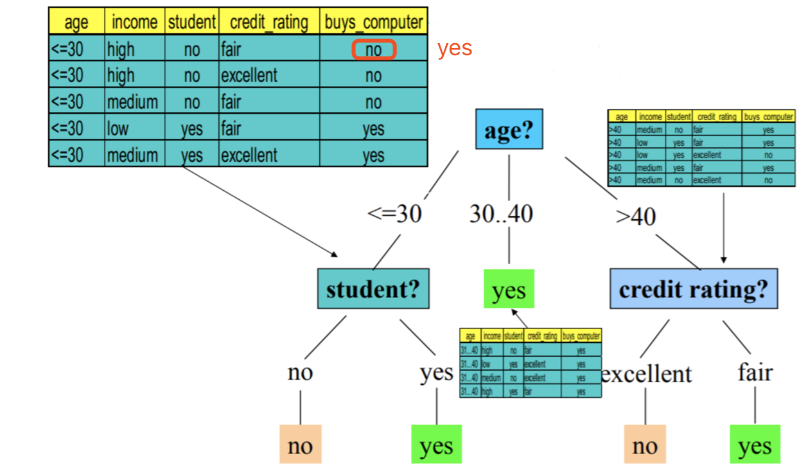
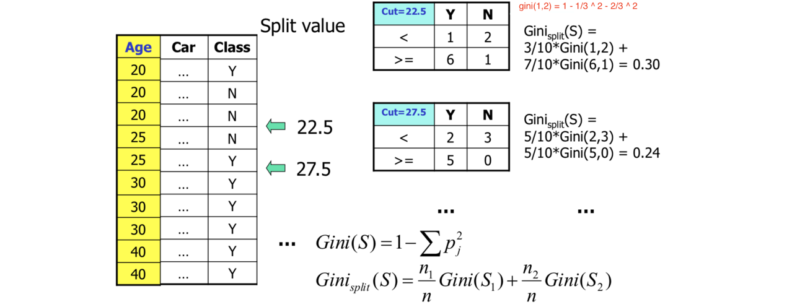
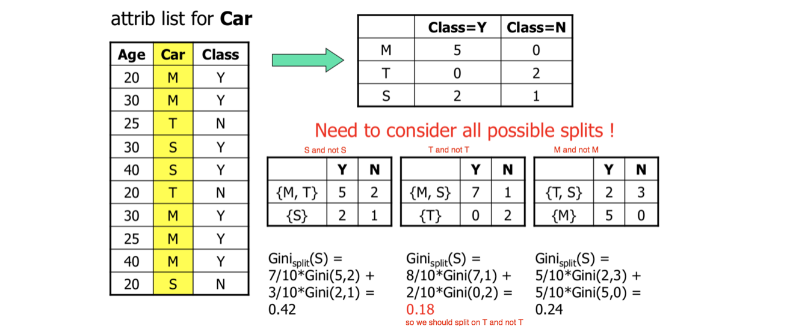
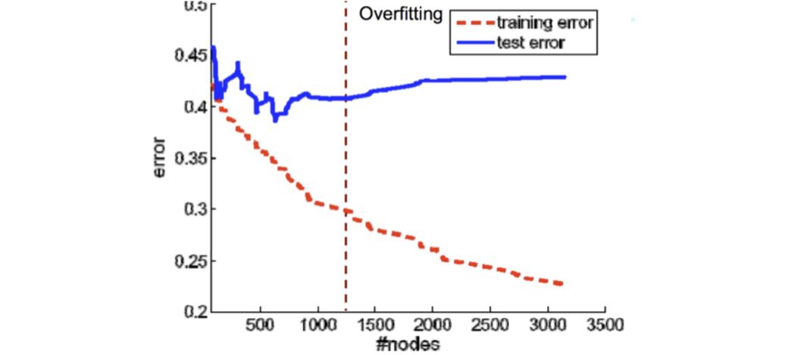
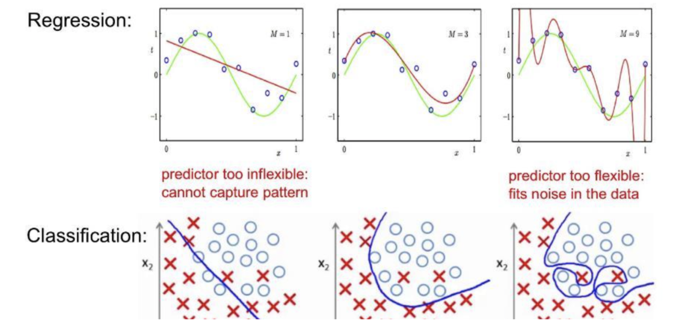
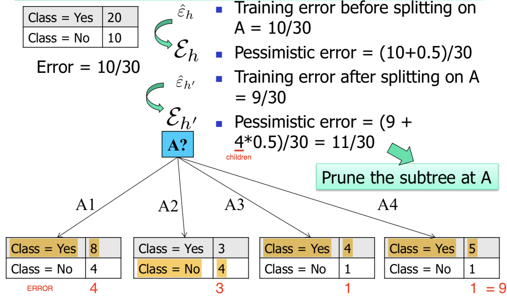

Abstract:
- Derive rules from the decision tree
- The ID3 algorithm
- The CART algorithm
- Decision tree pruning
A Decision Tree Example


下面介绍如何选择attribute to split
Extracting Classification Rules from Trees
- represent the knowledge in the form of IF-THEN rules
- One rule is created for each path from the root to leaf
- Each attribute-value pair along a path forms a conjunction
- The leaf node holds the class prediction
E.g.,
IF age = “<=30” AND student = “no” THEN buys_computer = “no”
Algorithm for Decision Tree Induction
- Basic algorithm
- Input: Attributes are categorical (if continuous-valued, they are discretized in advance)
- Overview: Tree is constructed in a top-down recursive divide-and-conquer manner
使用决策树进行决策的过程就是从根节点开始，测试待分类项中相应的特征属性，并按照其值选择输出分支，直到到达叶子节点，将叶子节点存放的类别作为决策结果
- Three conditions for stopping partitioning (i.e.,boundary conditions)
- select the attribute with the highest information gain

For the example above, we use the information gain as the criteria, and splitting the age into 3 partitions because it is always better than 2 partitions, as 3 partitions got smaller entropy. So, we should always spilt partitions as many as we can. Information Gain Computation
why we choose age to split not other attributes?
Let’s compute the information gain for all attribute:
class s1: buycomputer = “yes”, s2:”no”
The entropy for age:
5/14*I(2,3) means “age<=30” has 5 out of 14 samples, with 2 yes and 3 no.
Hence, Gain(age) = I ( p, n) - E(age) = 0.246
Similarly,
Gain(income) = 0.029
Gain(student) = 0.151
Gain(credit rating) = 0.048
So, we choose age to spilt is most reasonable.先根据age分，得到三个分支，然后根据每个分支的information gain再选择attribute split。
注意:
在一棵决策树上也许会存在一部分节点，它们具有多种可能的结果值，但是又无法再进一步拆分。例如:把第一行数据buys_computer改为yes，在age<30, student = ‘No’的情况下就是多种结果。

Gini index(CART)
- CART stand for Classification And Regression Tree
- Gini index (CART, IBM IntelligentMiner)
- All attributes are assumed continuous-valued
- Assume there exist several possible split values for each attribute
- May need other tools, such as clustering, to get the possible split values
- Can be modified for categorical attributes
- Induces binary split => binary decision trees
- If a data set T contains examples from n classes, gini index, gini(T) is defined as
where pj is the relative frequency of class j in T.
Gini index measures the probability to make mistake - If a data set T is split into two subsets T1 and T2 with sizes N1 and N2 respectively, the gini index of the split data contains examples from n classes, the gini index gini(T) is defined as
- The attribute provides the smallest ginisplit(T) is chosen to split the node (need to enumerate all possible splitting points for each attribute).
Case I: Numerical Attributes
Case II: Categorical Attributes

ID3 vs. CART
- ID3是多叉树
- CART是二叉树，且每个非叶子节点都有两个孩子
Overfitting
- Overfitting: An induced tree may overfit the training data
- Too many branches, some may reflect anomalies(反常) due to noise or outliers
- Poor accuracy for unseen samples

- Overfitting: model too complex -> training error keep decreasing, but testing error increases
- Underfitting : model too simple ->both training and testing has large errors.
Overfitting examples in Regression & Classification:

Avoid Overfitting
- Prepruning: Halt tree construction early — do not split a node if this would result in the goodness measure falling below a threshold
- Difficult to choose an appropriate threshold
- Postpruning: Remove branches from a “fully grown” tree — get a sequence of progressively(逐渐地) pruned trees
- Use a separate validation set
- Estimation of generalization/test errors
- Use all the data for training
- but apply a statistical test (e.g., chi-square) to estimate whether expanding or pruning a node may improve the entire distribution
- Use minimum description length (MDL) principle
- Observed on the training data
- e(t): #errors on a leaf node t of the tree T
- e(T)=∑ e(t)
- What’s the generalization errors(i.e.,errors on testing data) on T?
- Use pessimistic estimates
- e(t)= e(t)+0.5
- E(T) = e(T) + 0.5N, where N is the number of leaf nodes in T
- What’s the generalization errors on root(T) only?
- E’ (root(T)) = e(T) + 0.5
- Post-pruning from bottom-up
- If generalization error reduces after pruning, replace sub-tree by a leaf node
- Use majority voting to decide the class label
Example

The pessimistic error before splitting is 10.5 out of 30 smaller than after splitting 11 out of 30.
So, we pruned the subtree at A, then left A as leaf node and marked as “Yes”.Enhancements to basic decision tree induction
- Allow for continuous-valued attributes
- Dynamically define new discrete-valued attributes that partition the continuous attribute value into a discrete set of intervals, one-hot encoding, or specialized DT learning algorithms
- Handle missing attribute values
- Assign the most common value of the attribute n
- Assign probability to each of the possible values
- Attribute construction
- Classification—a classical problem extensively studied by statisticians and machine learning researchers
- Scalability: Classifying data sets with millions of examples and hundreds of attributes with reasonable speed
- Why decision tree induction in data mining?
- relatively faster learning speed (than other classification
methods) - convertible to simple and easy to understand classification rules
- can use SQL queries for accessing databases
- comparable classification accuracy with other methods
- relatively faster learning speed (than other classification